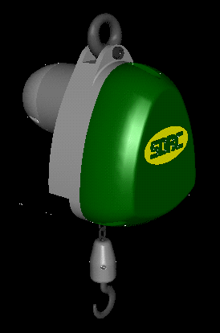
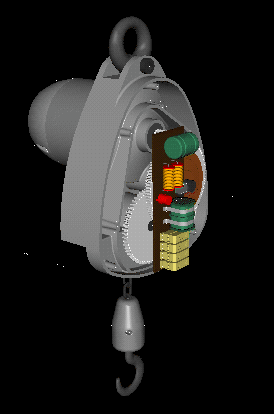
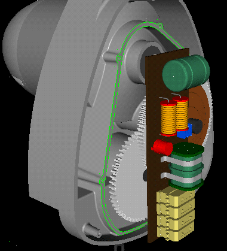
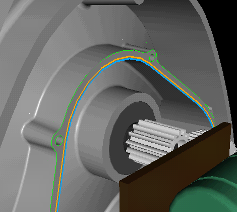
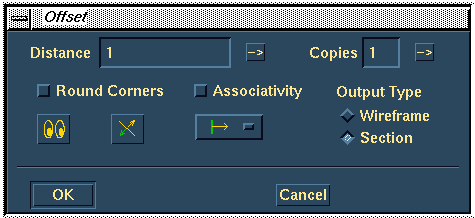

| Next Page | Previous Page | First Page |
|  | |
 |


 or
or 
OR if your machine doesn't look so good with translucency, Hide
the Gear Box Cover instance.
This documentation shows the Gear Box Cover hidden for clarity in
understanding the demo.
Master Assembly -> Master Modeler


Get the 2D Profiles part (HOIST PARTS Bin) to the workbench.


Offset the section 1mm outwards.
Offset, RMB, Section, pick curves, Associativity OFF, Outpt Type, Section, OK